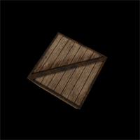

워밍업
본격적인 설명 전에 Three.js 앱이 어떻게 화면을 구성하는지 간단하게 따라해 보겠습니다.
이 강좌는 기본적으로 어느정도 javascript 에 숙달되었다는 것을 가정하고 작성되었으므로 내용을 보시다가 궁금증이 있으면 wiki 로 문의하시기 바랍니다.
기본적인 html 문서를 만들고 script 태그를 이용해서 최신 버전의 Three.js 를 문서에 첨부합니다.
3차원의 세계는 다음과 같은 요소들로 구성되어 있습니다.
- 현재 시간과 공간 정보를 모두 포함하는 장면 - scene
- 그리고 그 장면을 찍고 있는 카메라 - camera
- 그 안에서 움직이거나 정지한 대상물 - object (예제에서는 그 대상물을 그물코, 즉 mesh 로 사용)
- 장면을 담아 표현해 내는 처리장치(시각 처리 장치)에 해당하는 렌더러 - renderer
이 네 가지 정보가 최소한의 3D 을 구성하는 요소들 입니다. 이 요소들을 이용해서 기본적인 화면을 만들어 보겠습니다.
하지만 아직까지는 아무런 내용도 화면에 출력되지 않습니다. 클래스를 상속만 했지 클래스에 필요한 property 들을 정의하지 않았기 때문입니다. 이제 property 들을 정의해 보겠습니다.
카메라를 구성하면서 아용한 인자들은 각각, FOV(Field of View), Aspect, Near, Far 입니다. FOV 는 쉽게 말해서 최대 시야각이라고 생각하면 됩니다. Aspect는 카메라의 가로세로 비율이고, Near 와 Far 는 각각 최소 최대 초점거리 입니다. 또한 camera.position.z 값을 지정했는데, 이는 최대 거리(1000)을 기준으로 중간 크기 정도로 보이게 x, y, z 좌표상의 중간 값인 500 으로 정의한 것입니다.
위에서는 객체를 구성하기 위해서 mesh 를 사용했습니다. mesh 를 만들기 위해서는 기하학적 구조(geometry) 와 질료(material)의 두가지가 필요합니다. 이 예제에서는 가로, 세로, 높이를 가진 CubGeometry 와, 이미지를 활용하여 질료(material) 을 구성했습니다.
장면에 카메라와 객체를 배치합니다. scene 의 add 함수를 이용해서 간다하게 구성 할 수 있습니다.
이렇게 모아진 대상물들을 실제로 출력하기 위해서 WebGLRenderer 를 이용하여 문서에 삽입합니다.
animate 함수는 화면을 지속적으로 랜더링 하기 위해 작성되었습니다. WebGL 에서 화면은 고정되어 있는 것이 아니라 지속적으로 갱신이 되고 있는듯 합니다. 따라서 HTML5 의 게임그래픽용 함수인 RequestAnimationFrame 을 이용하여 화면을 갱신하고, 랜더링을 시켜 줍니다. 랜더링 과정에서 살짝 객체의 위치를 조절하면 애니메이션 효과를 줄 수 있습니다.

DEMO
테트리스 만들기
이 시리즈는 http://www.smashinglabs.pl/ 의 3D 테트리스 시리즈를 번역하였습니다.
Part 1
Three.js 를 배우기는 상당히 쉽습니다. 이 시리즈가 최고로 좋은 튜토리얼은 아니겠지만, 저는 제가 3D 테트리스 게임을 만들면서 배운 내용을 공유하겠습나.
준비
먼저 Three.js 파일을 다운 받으세요 : https://github.com/mrdoob/three.js
저는 또한 mrdoob 씨의 Stats 파일도 이용합니다 : https://github.com/mrdoob/stats.js
위쪽에서 여러분에게 필요한 파일은 build 디렉토리 안에 있는 파일들 입니다.
Blox 폰트는 메뉴와 포인트에 사용하기 위한 폰트 입니다 : http://www.dafont.com/blox.font
위의 폰트를 사용하기 위해서 Cufon 으로 컨버팅을 합니다 : http://cufon.shoqolate.com/generate/
제 프로젝트의 모든 JS 파일은 JS 폴더에 넣었고, 음악은 music 폴더에 html 은 root 에 넣었습니다.
HTML
저는 게으른 편이라서 CSS 파일들은 그냥 HTML 문서 헤더에 삽입했습니다. 뭐...이렇게 하는것이 그렇게 나쁘지는 않습니다. 왜냐하면 매우 짧아서 캐싱이 그다지 필요하지 않거든요. 길게 설명할 것 까지는 안되기 때문에 그냥 진행하겠습니다. 인트로와 점수를 위한 CSS 입니다. 그리고 초기화를 하면서 모든 JS 파일을 등록하고, cufon 함수를 실행하겠습니다.
<!doctype html>
<html>
<title>Three.js Tetris</title>
<style>
body {
margin: 0;
paddin: 0;
overflow: hidden;
}
#menu {
position: absolute;
width: 200px;
height: 250px;
top: 50%;
left: 50%;
text-aling: center;
border: 3px solid #fff;
border-radius: 15px;
background: #e36b23;
box-shadow: 2px 10px 5px #888;
}
#menu p {
font-weight: 700;
color: #fff;
}
#menu p a {
color: #fff;
}
#menu button {
width: 80px;
height: 25px;
background-color: #c44032;
border: 3px solid #fff;
border-radius: 5px;
font-size: 14px;
font-weight: 700;
color: #fff;
}
#points {
position: absolute;
width: 120px;
height: 16px;
padding: 12px;
top: 20px;
right: 80px;
border: 3px solid #fff;
border-radius: 15px;
background: #e36b23;
box-shadow: 2px 10px 5px #888;
font-size: 14px;
font-weight: 700;
color: #fff;
text-align: right;
display: none;
}
</style>
<meta http-equiv="Content-Type" content="text/html; charset=utf-8"/>
</head>
<body>
<div id="menu">
<h1>Three.js Tetris</h1>
<p>
Movement: arrows<br>
Rotation: AD/SW/QE<br>
Author: <a href="http://www.smashinglabs.pl">smashinglabs.pl</a>
</p>
<button id="play_button">Play</button>
</div>
<div id="points">
0
</div>
<script type="text/javascript" src="js/Three.js"></script>
<script type="text/javascript" src="js/Stats.js"></script>
<script type="text/javascript" src="js/tetris.js"></script>
<script src="js/cufon-yui.js" type="text/javascript"></script>
<script src="js/Blox_400.font.js" type="text/javascript"></script>
<script type="text/javascript">
Cufon.replace('#menu h1');
Cufon.replace('#points');
</script>
</body>
</html>
기초공사와 Three.js 초기화
당신의 게임을 구조화 하는 방법은 여러가지가 있습니다. 게임 포탈에서 호스팅을 받기를 원한다면, 클로저(전역 변수를 사용하지 않는 것) 종류의 것들이 필요할 것입니다. 만약 당신의 게임이 복잡하다면 상속은 아주 유용할 것입니다. 이 프로젝트는 전역변수로 다음과 같이 할당합니다.
var Tetris = {};
모든 객체와 함수, 그리고 변수들은 Tetris 객체의 맴버로 등록됩니다. 이러한 방법은 당신의 코드를 유지보수 하는데 아주 좋은 방법이고, "this"의 사용을 피하는 방법이기도 합니다. 조금더 개선하기 위해서 제가 사용한 모든 객체들은 싱글톤 입니다. 이 방법의 단점에 대해서는 다음 글 전지전능 객체와 다른 모든 것들을 혼합하는 것에 대한 이슈을 참고하시기 바랍니다. 하지만 이 프로젝트에서는 이대로 사용합니다.
우리는 이 구조에 대해서는 나중에 다시 이야기 하기로 하고, 지금은 Three.js 만을 초기화 하겠습니다. 저는 Aerotwist 의 깔끔하지만 설명이 충분하고 잘된 튜토리얼을 자주 이용합니다. 다음 내용을 진행하기 전에 참고하시면 좋을 것 같습니다.
var Tetris.init = function(){
// 화면 크기 설정
var winWidth = window.innerWidth;
var winHeight = window.innerHeight;
// 카메라 속성 설정
var view_angle = 45, aspect = winWidth / winHeight, near = 0.1, far = 10000;
// WebGL 렌더러를 만들고, 카메라를 씬에 넣기
Tetris.renderer = new THREE.WebGLRenderer();
Tetris.camera = new THREE.PerspectiveCamera(
view_angle,
aspect,
near,
far
);
Tetris.scene = new THREE.Scene();
// 카메라 위치의 기본값은 0, 0, 0 이므로 뒤쪽으로 땡겨 놓기
Tetris.camera.position.z = 600;
Tetris.scene.add(Tetris.camera);
// 렌더러 크기 설정하기
Tetris.renderer.setSize( winWidth, winHeight );
// DOM 에 렌더러가 제공해준 결과물 붙이기
// 설명후에 계속 이어집니다.
위에서 설정한 Tetris.init 은 Three.js 객체를 만들었고, 그 객체를 전역 변수에 할당했습니다. 렌더러와 씬(Scene) 그리고 카메라를 배치했습니다. 저는 게임이 윈도우 전체를 사용하기를 원하기 때문에 window.innerWidth 와 window.innerHeight 를 사용했습니다. 만약 원한다면 fullscreen API 를 이용해서 만드실 수도 있습니다. 카메라의 위치를 뒤쪽으로 옮겼고, 실제 거리와 크기는 당신이 사용하는 게임의 크기에 맞추어 정할 수 있습니다.
우리의 게임 세계는 3D 와이어프레임으로 구성된 세계이고, 그곳에서 박스가 떨어질 수 있습니다. 당신이 게임에 관한 작업을 할 때, 최종 결과가 무엇보다도 중요하다는 것을 알 수 있을 겁니다. 교묘하게 속이는 것을 두려워 하면 안되요! 지금과 같은 경우에는 박스 경계선 위에 선을 그려야할 좋은 이유가 없습니다. 우리는 보통의 박스 기하체를 이용하겠습니다. 그리고 모든 연결되는 정점을 라인으로 연결하겠습니다 보통 사용하는 삼각형 말구요. 그리고 운 좋게도 Three.js 문법에 그게 있습니다.
// 객체 설정
var boundingBoxConfig = {
width: 360,
height: 360,
depth: 1200,
splitX: 6,
splitY: 6,
splitZ: 20
};
Tetris.boundingBoxConfig = boundingBoxConfig;
Tetris.blockSize = boundingBoxConfig.width/boundingBoxConfig.splitX;
var boundingBox = new THREE.Mesh(
new THREE.CubeGeometry(
boundingBoxConfig.width, boundingBoxConfig.height, boundingBoxConfig.depth,
boundingBoxConfig.splitX, boundingBoxConfig.splitY, boundingBoxConfig.splitZ
),
new THREE.MeshBasicMaterial({
color : 0xffaa00,
wireframe : true
});
);
Tetris.scene.add(boundingBox);
//첫 렌더링
Tetris.renderer.render(Tetris.scene, Tetris.camera);
// 설명후에 계속 이어집니다.
Three.js API 에서 CubeGeometry 는 다음과 같이 설정하도록 되어있습니다.
(
width <Number>,
height <Number>,
depth <Number>,
segmentsWidth <Number>,
segmentsHeight <Number>,
segmentsDepth <Number>,
materials <Array>,
sides <Object>
)
우리는 "segmentX" 옵션으로 우리 게임보드에 딱 맞도록 만들었습니다. 또한 라인을 직접 그리는 대신에 와이어 MeshBasicMaterial 의 와어어 프레임을 이용했습니다.
다음은 초기화 함수에서 마지막으로 해야 할 것입니다.
Tetris.stats = new Stats();
Tetris.stats.domElement.style.position = 'absolute';
Tetris.stats.domElement.style.top = '10px';
Tetris.stats.domElement.style.left = '10px';
document.body.appendChild( Tetris.stats.domElement );
document.getElementById("play_button").addEventListener('click', function(e){
e.preventDefault();
Tetris.start();
});
};
우리는 초당 프레임 카운터를 붙였고, 시작 버튼에 Tetris.start() 이벤트를 연결하였습니다. 시작이 되면 어떻게 될까요?
Tetris.start = function(){
document.getElementById("menu").style.display = "none";
Tetris.pointsDOM = document.getElementById("points");
Tetris.pointsDOM.style.display = "block";
Tetris.animate();
};
게임 루프
왜 애니메이션에 setInterval 함수가 없는지 궁금해 하실 것 같은데요. requestAnimationFrame() 이라고 하는 훨씬 좋은 함수가 있습니다. 이 함수는 브라우저가 분주하게 돌아가지 않을 때만 호출이 되는 함수입니다. 그리고 초당 60회 까지만 호출되는 함수이죠. 이 말의 의미는 초당 렌더링할 수 있는 프레임의 갯수가 제한되어 있다는 말입니다. 최적의 프레임 수이기 때문에 적합한 프레임 수를 찾으려고 할 필요가 없습니다. 이 함수는 아직까지는 새로운 함수라서 다음과 같이 초기화를 해 주어야 합니다.
if( !window.requestAnimationFrame ) {
window.requestAnimaitionFrame = (function(){
return window.webkitRequestAnimationFrame ||
window.mozRequestAnimationFrame ||
window.oRequestAnimationFrame ||
window.msRequestAnimationFrame ||
function( /* function FrameRequestCallback */ callback, /* DOMElement Element */ element ) {
window.setTimeout( callback, 1000 / 60 );
};
})();
}
이제 우리는 animate() 함수를 쓸 때가 되었습니다. Tetris 는 실시간 게임이지만, 게임의 각각의 단계는 매우 오래 걸립니다. 우리는 블록이 앞으로 전진할 때를 계산해 줄 필요가 있습니다. 그래서 시간과 관련된 변수들이 필요합니다.
Tetris.gameStepTime = 1000;
Tetris.frameTime = 0; //ms
Tetris.cumulatedFrameTime = 0; // ms
Tetris._lastFrameTime = Date.now(); // timestamp
Tetris.gameOver = false;
이제 우리의 단순화 시킨 animate 함수가 Three.js 렌더러를 호출하고, 스스로를 requestAnimationFrame 함수로 재귀적으로 실행시킵니다.
Tetris.animate = function(){
var time = Date.now();
Tetris.frameTime = time - Tetris._lastFrameTime;
Tetris._lastFrameTime = time;
Tetris.cumulatedFrameTime += Tetris.frameTime;
while( Tetris.cumulatedFrameTime > Tetris.gameStepTime ) {
//블럭이동이 여기에서 실행됩니다.
Tetris.cumulatedFrameTime -= Tetris.gameStepTime;
}
Tetris.renderer.render( Tetris.scene, Tetris.camera );
Tetris.stats.update();
if( !Tetris.gameOver ) window.requestAnimationFrame( Tetris.animate );
};
눈치챘을지도 모르겠지만, stats 업데이틀 보다 장황하게 할 수도 있습니다. Stats 프레임 갯수를 카운팅 하는데 우리는 같은 일을 했습니다. ....
마지막으로, 우리는 init 함수를 호출합니다.
window.addEventListener("load", Tetris.init);
지금까지의 결과와 전제 스크립트 입니다.
if (!window.requestAnimationFrame) {
window.requestAnimationFrame = (function () {
return window.webkitRequestAnimationFrame ||
window.mozRequestAnimationFrame ||
window.oRequestAnimationFrame ||
window.msRequestAnimationFrame ||
function (/* function FrameRequestCallback */
callback, /* DOMElement Element */
element) {
window.setTimeout(callback, 1000 / 60);
};
})();
}
var Tetris = {};
Tetris.init = function () {
// set the scene size
var WIDTH = window.innerWidth,
HEIGHT = window.innerHeight;
// set some camera attributes
var VIEW_ANGLE = 45,
ASPECT = WIDTH / HEIGHT,
NEAR = 0.1,
FAR = 10000;
// create a WebGL renderer, camera
// and a scene
Tetris.renderer = new THREE.WebGLRenderer();
Tetris.camera = new THREE.PerspectiveCamera(VIEW_ANGLE,
ASPECT,
NEAR,
FAR);
Tetris.scene = new THREE.Scene();
// the camera starts at 0,0,0 so pull it back
Tetris.camera.position.z = 600;
Tetris.scene.add(Tetris.camera);
// start the renderer
Tetris.renderer.setSize(WIDTH, HEIGHT);
// attach the render-supplied DOM element
document.body.appendChild(Tetris.renderer.domElement);
// configuration object
var boundingBoxConfig = {
width : 360,
height : 360,
depth : 1200,
splitX : 6,
splitY : 6,
splitZ : 20
};
Tetris.boundingBoxConfig = boundingBoxConfig;
Tetris.blockSize = boundingBoxConfig.width / boundingBoxConfig.splitX;
var boundingBox = new THREE.Mesh(
new THREE.CubeGeometry(
boundingBoxConfig.width,
boundingBoxConfig.height,
boundingBoxConfig.depth,
boundingBoxConfig.splitX,
boundingBoxConfig.splitY,
boundingBoxConfig.splitZ),
new THREE.MeshBasicMaterial({
color : 0xffaa00,
wireframe : true
}));
Tetris.scene.add(boundingBox);
Tetris.renderer.render(Tetris.scene, Tetris.camera);
Tetris.stats = new Stats();
Tetris.stats.domElement.style.position = 'absolute';
Tetris.stats.domElement.style.top = '10px';
Tetris.stats.domElement.style.left = '10px';
document.body.appendChild(Tetris.stats.domElement);
document.getElementById("play_button").addEventListener('click', function (event) {
event.preventDefault();
Tetris.start();
});
};
Tetris.start = function () {
document.getElementById("menu").style.display = "none";
Tetris.pointsDOM = document.getElementById("points");
Tetris.pointsDOM.style.display = "block";
Tetris.animate();
};
Tetris.gameStepTime = 1000;
Tetris.frameTime = 0; // ms
Tetris.cumulatedFrameTime = 0; // ms
Tetris._lastFrameTime = Date.now(); // timestamp
Tetris.gameOver = false;
Tetris.animate = function () {
var time = Date.now();
Tetris.frameTime = time - Tetris._lastFrameTime;
Tetris._lastFrameTime = time;
Tetris.cumulatedFrameTime += Tetris.frameTime;
while (Tetris.cumulatedFrameTime > Tetris.gameStepTime) {
// block movement will go here
Tetris.cumulatedFrameTime -= Tetris.gameStepTime;
}
Tetris.renderer.render(Tetris.scene, Tetris.camera);
Tetris.stats.update();
if (!Tetris.gameOver)
window.requestAnimationFrame(Tetris.animate);
}
window.addEventListener("load", Tetris.init);
Part 2
Part 3
Part 4
Part 5